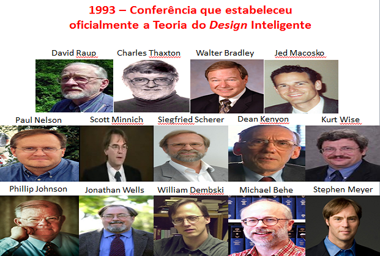

A HISTÓRIA DO DESIGN INTELIGENTE: da formação oficial à publicação revisada por pares
Por Everton F. Alves (e-Book)
Acredita-se, ainda hoje, que Charles Darwin rejeitava qualquer alegação de design inteligente na natureza. No entanto, há evidências de que Darwin aceitou alguns aspectos desse ponto de vista [¹]. Sua conceituação do design foi fundada em ambas as ideias cosmológicas e teleológicas da teologia natural clássica. Somente, quando Darwin descobriu o processo dinâmico de seleção natural, ele rejeitou o velho argumento teleológico. No entanto, ele nunca foi capaz de ignorar a forte experiência da beleza e complexidade de um universo de design inteligente, como um todo.
O termo “design inteligente” (DI) foi provavelmente introduzido por William Whewell, um professor do Trinity College, Cambridge (1794-1866) [1]. Em 1897, Ferdinand Schiller, erudito da Universidade de Oxford, nos Estados Unidos, utilizou o termo design inteligente como alternativa ao processo evolutivo cego em um ensaio intitulado “Darwinism and the Design Argument” [2]. Nele, Schiller disse: “não será possível excluir a suposição de que o processo da Evolução possa ser guiado por um design inteligente” [p.141].
Em 1993, um grupo de cientistas e filósofos norte-americanos se reuniu em uma conferência na cidade de Pajaro Dunes, Califórnia, a fim de questionar a teoria da evolução [3]. O grupo inicial de dissidentes foi composto por pesquisadores de diversas áreas, tais como Philip E. Jonhson (organizador da conferência), Dean Kenyon, Paul Nelson, Stephen C. Meyer, William Dembski, Jonathan Wells, Jed Macosko, Scott Minich, Siegfried Scherer, Kurt Wise, David Raup, Charles Thaxton, Walter Bradley e Michael Behe. Foi então que o design inteligente, tal como o conhecemos hoje, foi oficialmente estabelecido como teoria científica, embora os pressupostos do design não sejam novos.
De lá para cá, diversos estudos têm evidenciado a controvérsia do naturalismo e sua dificuldade em explicar a origem da vida. Ao mesmo passo, houve um aumento significativo na produção científica, cujas evidências empíricas apoiam o design inteligente. A publicação de artigos revisados por pares baseada em design é relativamente nova, tendo seu início há pouco mais de trinta anos [4]. No entanto, o movimento literário do design efetivamente começou em 1991 por meio do best-seller “Darwin no banco dos réus”, do professor de direito Phillip E. Johnson [5], e popularizou-se em 1996, com a publicação de “A Caixa Preta de Darwin” do bioquímico Michael Behe [6].
Mas como nem tudo são flores, o design inteligente tem passado por grandes dificuldades para se inserir na comunidade científica. Isso porque a partir do momento em que um cientista desafia uma crença profundamente defendida, como no caso do naturalismo filosófico, ele enfrenta grande resistência em financiamentos de seus projetos de pesquisa e na publicação de seus resultados em anais de congressos ou em periódicos de alto fator de impacto.
Em 2004, por exemplo, a mídia reportou um caso polêmico relacionado à publicação de um artigo que apoiava o design inteligente em uma revista científica, bem como as perguntas subsequentes de se os procedimentos editoriais adequados foram seguidos e se ele [o artigo] foi devidamente revisado. Stephen C. Meyer, diretor do Centro do Instituto Discovery, nos Estados Unidos, publicou um artigo intitulado “The origin of biological information and the higher taxonomic categories” na Proceedings, revista de biologia do Museu Nacional de História Natural do Instituto Smithsoniano, em Washington [7].
Um mês depois, o conselho do periódico de Biologia emitiu uma nota onde criticou o artigo, dizendo que ele não atendia aos padrões científicos do processo, e enfatizou que a decisão de publicá-lo foi do ex-editor Richard Sternberg. Mas qual seria o motivo de tanta polêmica? Este artigo afirmou que a explosão cambriana não poderia ser explicada por processos naturais, isto é, nenhuma teoria materialista atual seria suficiente para explicar a origem da informação necessária para construir novas formas animais presentes na explosão cambriana. O artigo foi além, propôs o design inteligente como uma alternativa para a explicação da origem da informação biológica e para a taxonomia superior. O artigo que antes fora aceito, publicado e indexado em importantes bases de dados médicas, a partir de então foi retirada sua indexação.
Em 2010, outro manuscrito submetido a um periódico chamado Quarterly Review of Biology fez inicialmente menção aos princípios do design, logo, a submissão do manuscrito foi rejeitada. O autor do estudo, o bioquímico Michael Behe, foi orientado a retirar o termo “design inteligente” do manuscrito intitulado “Experimental Evolution, Loss-of-Function Mutations and 'The First Rule of Adaptive Evolution'” [8]; uma vez acatada a sugestão do editor, o trabalho foi publicado.
Esses são apenas alguns exemplos diante de tantos outros a que estão submetidos os cientistas comprometidos com a verdade. Assim, os cientistas pró-design foram forçados a evitar o assunto em suas publicações científicas. Diante desses casos, surgiu a necessidade de uma revista própria de acesso aberto, revisada por pares, especialmente nas ciências biológicas, onde a oposição ao design inteligente é particularmente intensa [9].
Em 2010, foi lançada a revista BIO-Complexity, publicada pelo Instituto Biológico nos Estados Unidos. BIO-Complexity [http://bio-complexity.org/ojs/index.php/main/index] é uma revista científica com um objetivo único [9]. Destina-se a ser o principal fórum para testar o mérito científico da alegação de que o design inteligente é uma explicação credível para a vida. Embora muitas grandes ideias científicas em design tenham sido publicadas em livros, a ciência especializada se desenvolve, em grande parte, através do processo de publicação avaliada por pares.
Diante dessas informações surge uma dúvida crucial: qual será o futuro das pesquisas baseadas em design? Apesar de os pesquisadores do design ter sido injustamente excluídos da literatura científica por muitos anos, as nossas expectativas são positivas, em grande parte, também, devido à observação da atual abertura científica ao diálogo, debate e crítica. Esperamos que os editores de periódicos científicos tradicionais mantenham a mente aberta para uma análise justa e imparcial, tal como foi a de Richard Sternberg. Assim, os méritos científicos do design dependerão, exclusivamente, de seu conteúdo.
Quer saber mais? Acesse o eBook do Everton conheça a assinatura de um projeto intencional nas estruturas biológicas complexas presentes na natureza e nos seres vivos: https://www.widbook.com/ebook/teoria-do-design-inteligente
REFERÊNCIAS
[1] Thorvaldsen S, Øhrstrøm P. Darwin's perplexing paradox: intelligent design in nature. Perspect Biol Med. 2013; 56(1):78-98.
[2] Darwinism and Design Argument. In: Schiller FCS (Ed.). Humanism: Philosophical Essays. Nova York: The Macmillan Co., 1903. Este ensaio foi primeiramente publicado no periódico Contemporary Review (Junho de 1897); 71:867-883.
[3] Eberlin MN. Fomos Planejados: a maior descoberta científica de todos os tempos. Campinas, SP: Widbook, 2014.https://www.widbook.com/ebook/fomos-planejados
[4] Pollard WG. Rumors of transcendence in physics. Am. J. Phys. 1984; 52(10):877-81.
[5] Johnson PE. Darwin on Trial. Washington, DC: Regnery Gateway, 1991.
[6] Behe M. Darwin's Black Box: The Biochemical Challenge to Evolution. New York: The Free Press, 1996.
[7] Meyer SC. The origin of biological information and the higher taxonomic categories. Proceedings of The Biological Society of Washington 2004; 117(2):213-239.
[8] Behe MJ. Experimental evolution, loss-of-function mutations, and "the first rule of adaptive evolution". Q Rev Biol. 2010; 85(4):419-45.
[9] Richards JW. BIO-Complexity: A New, Peer-Reviewed Science Journal, Open to the ID Debate. Evolution News and Views, 2010. Disponível em: http://www.evolutionnews.org/…/biocomplexity_a_new_peerrevi…